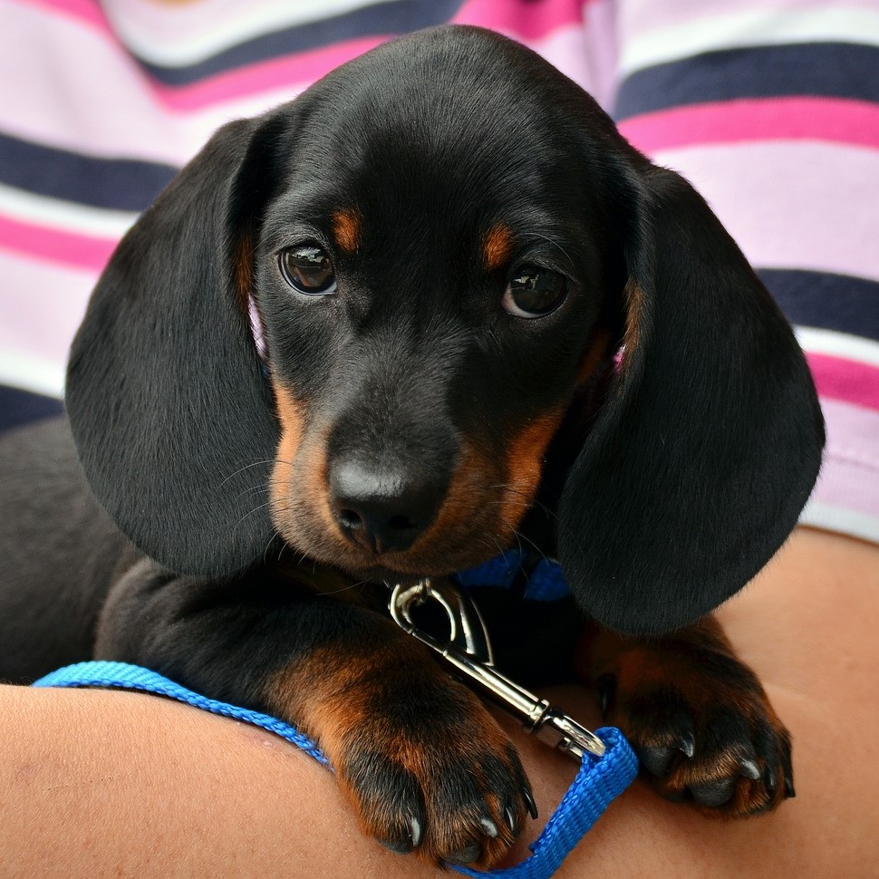
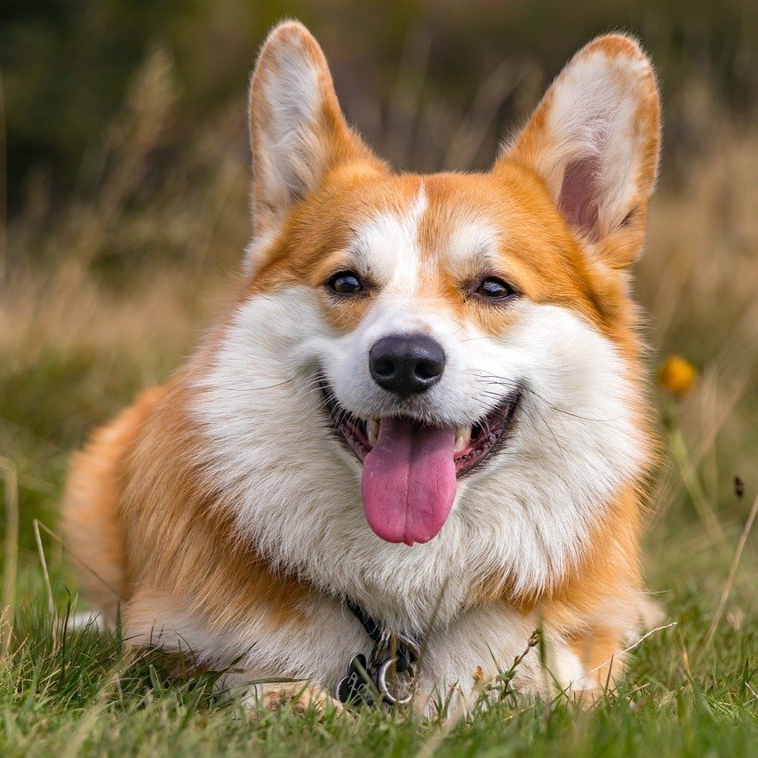
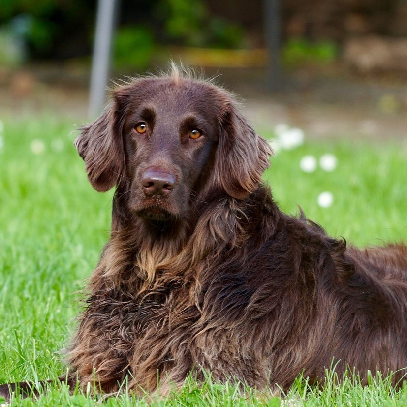
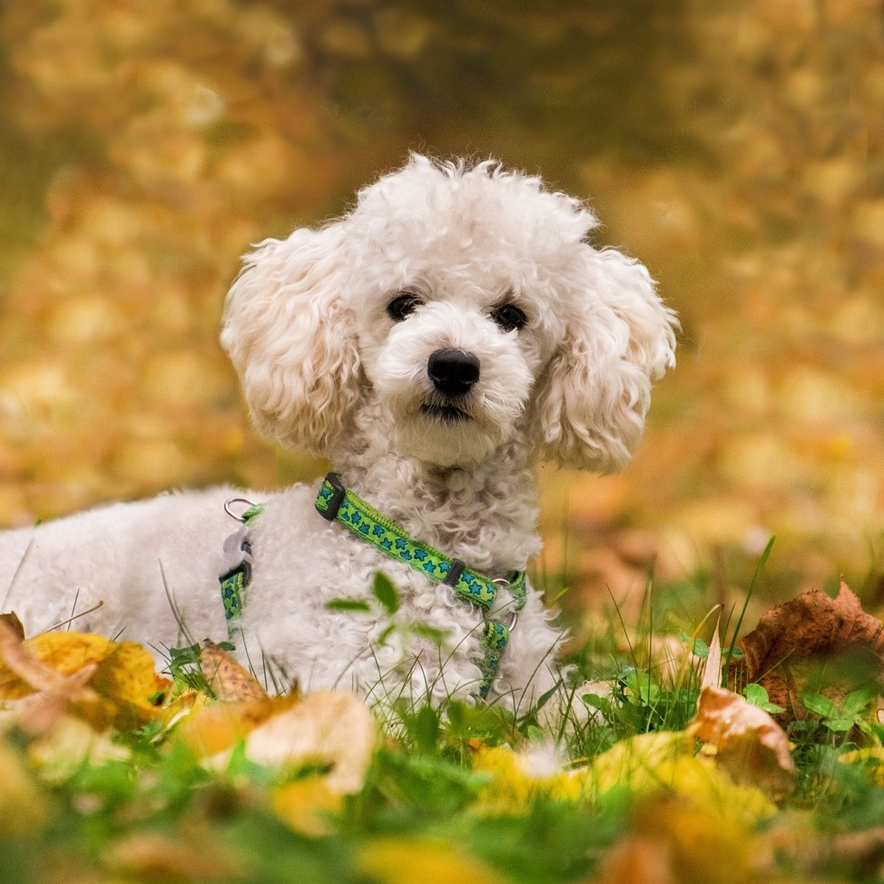
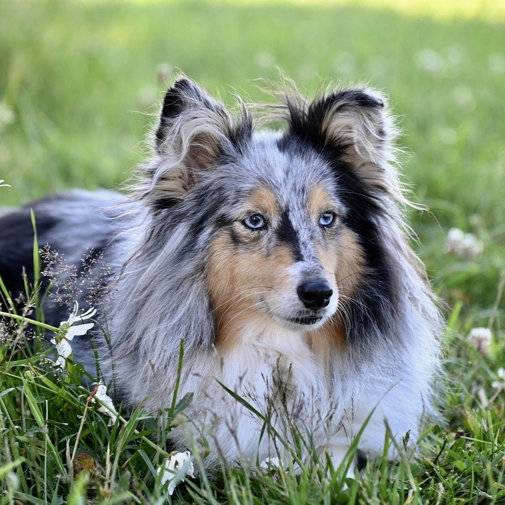
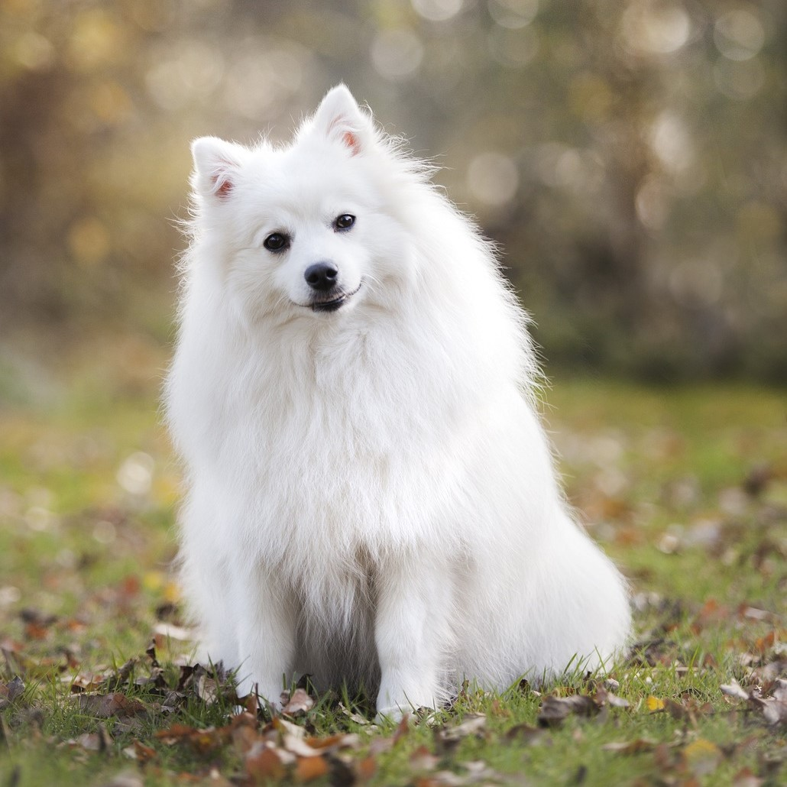
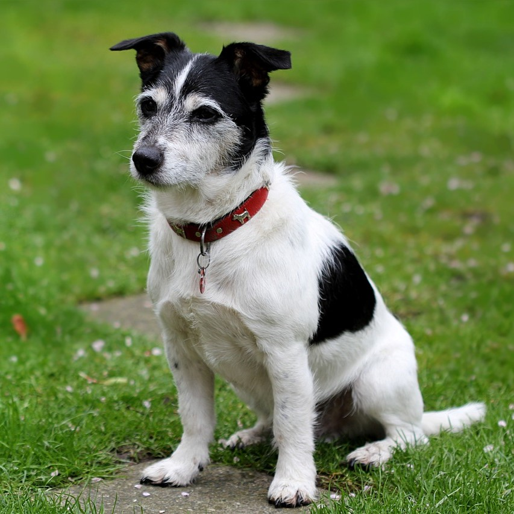
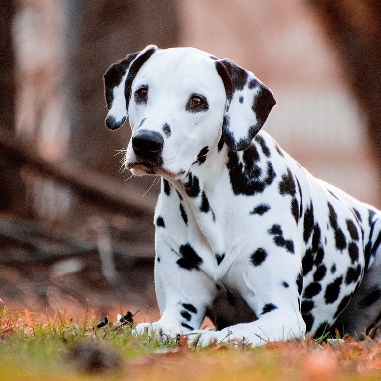

Olemme koiraihmisiä, joten päätimme perustaa koirakahvilan. Nimesimme sen Bark & Brew Cafeksi, koska se kuulosti sopivalta. Suunnittelimme kahvilan 15-80 vuotiaille henkilöille jotka rakastavat koiria.
Meidän kahvilaamme ovat tervetulleet kaikki koirista tykkäävät. Kahvilaan saa tuoda halutessaan myös omia koiria.
Haluamme erityisesti auttaa rescue-koiria löytämään turvallisen ja rakastavan kodin, joten alla on linkkejä muutamiin rescue-koirajärjestöihin, joihin lahjoitamme 25% voitoistamme joka kuukausi.
Meiltä löytyy yhteensä kahdeksan ihanaa koiraa,
joita voit tulla katsomaan ja silittämään kahvilaamme!
Kaikki koirat ovat yställisiä ja varmasti sulattavat sydämesi.
Koiria on kerrallaan paikalla aina puolet kaikista koiristamme.

Nakki
Nakki on nuorin koiristamme
ja onkin vasta pentu. Hän on luonteeltaan kuitenkin hyvin leikkisä
ja rakastaa vinkuvia leluja.

Lotta
Lotta tykkää leikkiä muiden koirien kanssa,
mutta antaa sinun harjata jos vain haluat.
Koiran harjaaminen on rentouttavaa!

Musti
Musti on ihmisrakas ja rakastaa rapsuja.
Hän on suurin koirista, mutta sitäkin rauhallisempi.
Löydät hänet oletettavasti nukkumasta.

Käpy
Käpy on ujo, mutta on houkuteltavissa
luoksesi nameilla. Käpy osaakin paljon temppuja.
Hän osaa kieriä, pyöriä, hyppiä ja vaikka mitä muuta!

Silver
Silver tuo pallon luoksesi
ja pyytää heittämään sitä lopputtomasti.
Jos kerran heität niin saat heittää uudelleen!

Lumi
Lumi rakastaa nukkumista,
ja saattaa ottaa päikkärit jopa sylissäsi.
Älä siis kuvittele lähteväsi useampaan tuntiin, jos hurmaat
Lumin.

Fifi
Fifi rakastaa leikkiä pallolla
ja osaa jopa etsiä sen pyydettäessä. Fifi on myös temppumestari,
hän ja käpy ovat yhdessä oikea duo.

Täplä
Täplä on utelias
ja onkin varmasti ensimmäinen ovella sinua vastassa.
Täplä vaatii paljon rapsuja, erityisesti korvien takaa
aina kutittaa!